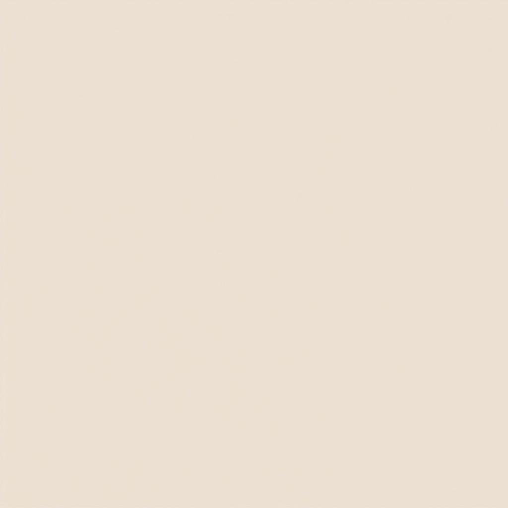
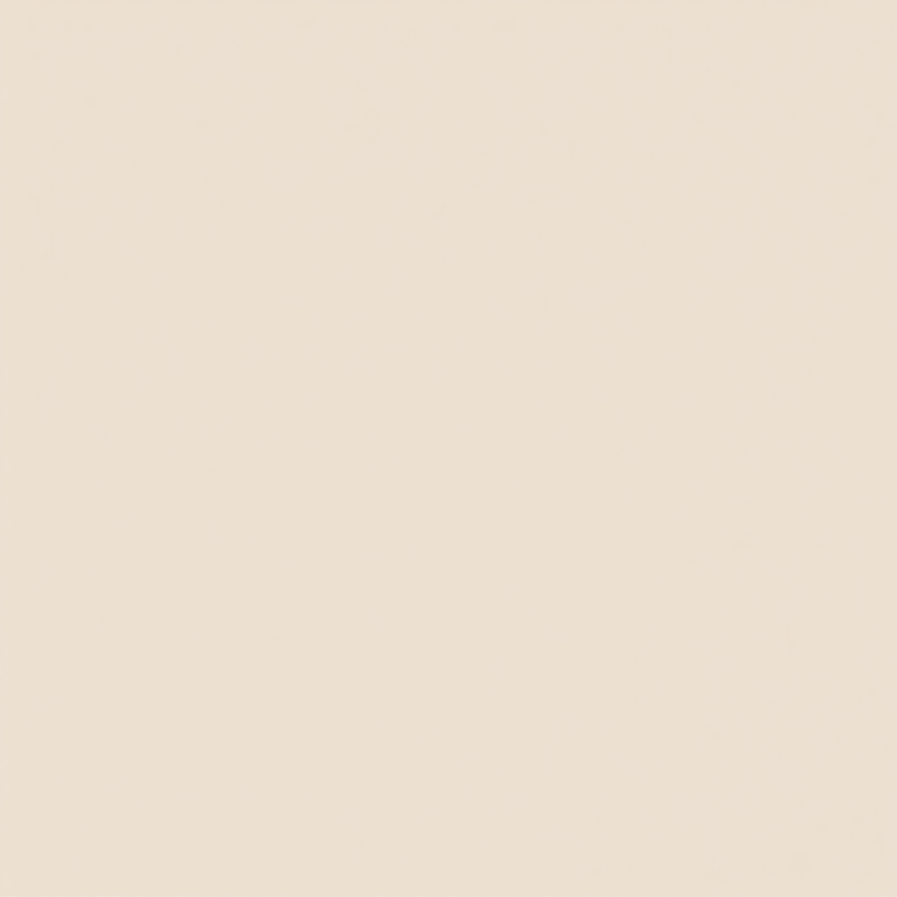

4층 가족 거실 기록장
사적인 가족 일기는 안전하게 남기고, 공개 글 후보는 검수한 뒤 생활 정보로 키웁니다.

가족이 같이 앉아 이야기와 글감을 고르는 거실
4층은 가족의 기억을 모으는 공간입니다. 사적인 일기는 가족끼리 남기고, 다른 한-베 가족에게 도움이 되는 이야기는 공개 글감으로 키웁니다.
Private test 운영 기준
날짜가 지난 “오늘 업데이트”처럼 보이지 않도록, 가족 라운지의 공개 글 후보와 일기 입력 흐름을 현재 운영 항목으로 분리했습니다.
- 질문오늘 가족 질문은 아이의 새 말, 웃긴 순간, 다음 주말 희망 장소를 바로 기록하게 정리했습니다.
- 공개 후보TRC, 송금, 예방접종 가이드는 공식 확인이 필요한 공개 후보로 분리했습니다.
- 사진 기록이미지 업로드 흐름을 오늘 기록의 핵심 증거로 두고, 글만 남는 빈 일기처럼 보이지 않게 했습니다.
- 검수가족 공개/비공개 범위 선택을 오늘 작성 전 확인 항목으로 고정했습니다.
운영 이미지 증거
가족 라운지는 실제 기록/검수 장면이 보여야 운영 페이지로 보입니다. 글 후보와 문서 확인 이미지를 붙여 검수 흐름을 보여줍니다.


공개 글 후보 선반
4층은 다른 층의 원자료를 그대로 반복하지 않고, 가족 회의에서 공개해도 되는 글감만 골라 보관합니다. 식단 실행은 1층, 아기 놀이는 2층, 생활비와 서류 처리는 3층에서 진행합니다.
아이 반찬, 엄마 식단, 베트남 재료 대체표를 묶어 공개 글로 키웁니다.
마트별 가격, 한국 식재료 구입처, 이번 주 꼭 살 것만 정리합니다. 2026.05 기준으로 온라인 링크에서 행사와 배송 가능 여부를 먼저 확인한 뒤, 신선식품은 매장 상태를 보고 결정합니다.
WinMart
쌀, 우유, 달걀, 휴지, 생수처럼 반복 구매하는 기본 품목 확인용. 온라인 구매 조건과 배송 정책을 먼저 보고, 가까운 WinMart+는 보충 장보기용으로 씁니다.
Lotte Mart Vietnam
대형 장보기, 과일 박스, 냉동식품, 아이 간식, 주방용품을 한 번에 볼 때 사용. 행사 카테고리와 배송 시간을 확인한 뒤 주말 장보기 후보로 둡니다.
K-Market
고추장, 된장, 김, 떡, 라면, 냉동 만두, 한국 반찬처럼 대체가 어려운 품목 확인용. 앱/온라인·오프라인 포인트와 홈딜리버리 안내를 같이 봅니다.
우리 가족 기준: 생필품은 가까운 곳, 한국 양념은 전문점, 대형 장보기는 행사·배송 시간을 보고 결정합니다. 가격은 지점·시간·앱 행사에 따라 달라질 수 있습니다.
 생활비와 송금
생활비와 송금
월세, 유치원, 병원, 송금 루틴을 실제 가족 기준으로 정리합니다. 매달 1일에는 고정비를 먼저 분리하고, 15일에는 남은 생활비와 비상금을 다시 확인합니다.
- KRW 송금 전 환율, 수수료, 도착 시간을 한 줄로 기록
- VND는 식비, 병원, 주말비, 예비비로 나눠 과소비를 방지
- 가족 회고 때 지출 이유를 보고 다음 주 장보기 예산 조정
 비자와 서류
비자와 서류
TRC, 출생 신고, 번역/공증, 병원 서류를 체크리스트로 만듭니다. 서류는 원본, 스캔본, 제출용 사본을 나눠 보관하고 만료일 8주 전부터 확인합니다.
- 여권, 거주지 증명, 가족관계 서류의 유효기간 확인
- 번역/공증 필요 문서와 사진 규격을 미리 분리
- 병원·학교·보험 제출용 사본은 별도 폴더로 보관
 주말 가족 루트
주말 가족 루트
아이 동선, 엄마 휴식, 아빠 준비물을 같이 보는 주말 코스입니다. 오전 활동, 낮잠 복귀, 저녁 정리까지 무리 없는 반나절 단위로 짭니다.
- 아이 낮잠 전후 이동 시간을 먼저 고정
- 엄마 휴식 시간과 장보기 보충 시간을 같은 동선에 배치
- 물, 간식, 여벌 옷, Grab 복귀 지점을 출발 전에 확인
이번 주 공개 글 우선순위
오늘의 추억 기록하기

최근 일기 피드
조회 모드: 확인 중...서버에서 일기장을 동기화하는 중...